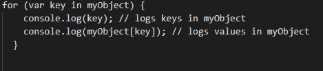
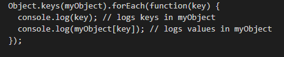
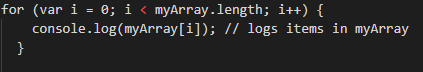
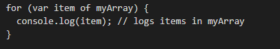
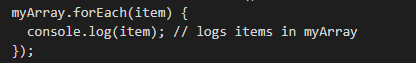
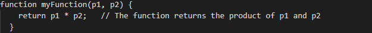
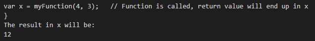

18th July 2020
JavaScript is the very engaging and adventurous friend of CSS and HTML:
To help me understand the different roles of
HTML and CSS I like to think of them in terms of a structure - such a house or an organism. Following this thought pattern, HTML would be considered the ‘bones’
or frame of a structure. In tech, it is considered to be the raw content and the information that is wishing to be communicated. In comparison, CSS would be the
flesh on the bones or the paint on the walls. There are lots of variations in what people or buildings look like, we can consider these differences in style or
appearance. In tech, CSS brings color and unique aesthetic properties to the information we want to communicate in order to make it more attractive and somewhat
more palatable.
Control Flow
Control flow is the sequence in which statements in a script are executed:
Like when you recreate that dish from masterchef, you will follow the steps in a recipe in an order to eventually achieve the desired outcome.
However, JavaScript is celebrated as being dynamic and responsive (a lot more so than a standard issue recipe), and so uses different operators (for example - operators
that use mathematical arithmetic) to respond differently according to changing information that is supplied to it. Using comparison and logical operators, we can define
terms which enable JavaScript to discern true or false statements and alter its action according to each outcome. These operators can be used simply or with more complexity,
essentially providing 1 or more alternatives depending on an outcome. Like having a plan contingency plan in place so it can execute a response for every possible outcome
e.g plan a), b), c) and so on.
Loops
Loops are a feature that affects the order of code execution and will repeatedly evaluates or runs a block of code until a
specified condition is met or time frame is complete:
Each ‘run through’ is known as an iteration.
‘For loops’ - will iterate until a specified condition returns false
‘Do while’ - loops do the same except they will always iterate at least once before checking the specified condition is true or false.
‘While loops’ - are similar to ‘for loops’ and will only run as long as the specified condition equates to true. In contrast to ‘for loops’, while loops the term that defines its iteration can be written anywhere in the body of the loop - not just at the top.
Bellow I have illustrated what the struture of a 'for loop'..:
A loop in action is similar to me showering. I will lather myself beginning from my head and down to my toes with soap with soap until I am covered and then rinse with
water repeatedly until I can no longer feel or see soap on my body.
And input my own example in the 'for' statement:
DOM stands for Document Object model and is considered The glue between HTML, CSS and JavaScript :
It is an object-oriented representation of a web page, which can be modified with a scripting language such as JavaScript i.e a pages content is stored in the DOM and may
be accessed and manipulated (have structure, style and content changed) via JavaScript.
In other words, the DOM is a programming interface for HTML and XML documents, and is a hierarchical presentation that browsers use to comprehend a document and object
within it on the web
Any changes made to the DOM via JavaScript is reflected in what gets shown in the browser, therefore you can dynamically add elements, remove them, move them around, modify attributes on them, set inline CSS styles, and perform all sorts of other types of things. Isn’t that INCREDIBLE!
Different browsers have different implementations of the DOM,
But every web browser uses some document object model to make web pages accessible via JavaScript.
Because working with the DOM you can allow you to manipulate and view so much of what creates the webpage, i.e get a reference to an element in the DOM, change its text content, apply new styles to it, create new elements and add them to the current element as children, or even delete it altogether, it becomes a
great tool to explore alterations to a site in real time, seeing immediately the impact of these changes on a web page.
Arrays and objects are both ways of collecting and storing data in JavaScript.
Objects:
Objects are a particular data type that can store a collection of properties or characteristics in the form of a key and a value. For example, an object could contain many different properties that pertain to a single person:
var client = { Name (key): ‘Emma’ (value), Age (key): 28 (value), Eye color (key): ‘Brown’ (value) etc... };
Accessing/ adding/ changing and removing properties from an object is achieved using either dot or bracket notation. For example to get the value of the Age key in the above
example I could use:
a) client.age
Or
b) client[‘age’]
And we can change the age value:
client.age = 82; (Yup, I’m feeling it today!)
You can use ‘for...in loops’ to iterate through properties in an object:  or by adding the ‘forEach()’ method to Object.keys(): 
Arrays:
Arrays are a particular type of variable that can store a collection of values for that one variable. For example, an array could contain
many different values (or names in this example) that pertain to a single person’s 6 cats. Cats in this example are the variable and the 6 different names
are the 6 different values for that one variable:
var emmasCats = [‘Bree’, ‘Sam’, ‘Bevuss, ‘Lyall’, ‘Lavender’, ‘Paprika’]
To access/ add/ change and remove items from an array we need to use zero-based indexing which means that the first value in the list of values is always 0, then 1,2,3 etc. If I want to access ‘Lavender’ I would write:
emmasCats[4];
Items can be added and removed from the beginning or end of an array using the push(), pop(), unshift(), and shift() methods:
push() - Adds item(s) to the end of an array
emmasCats.push(‘Poppy’);
pop() - Removes the last item from an array
emmasCats.pop();
unshift() - Adds item(s) to the beginning of an array
emmasCats.unshift('Celia', 'Charlie');
shift() - Removes the first item from an array
emmasCats.shift();
You can loop through items in an array in a few ways.
There’s the standard for loop:  There’s also the ‘for…of’ loop:  Or we can utilize the ‘forEach()’ method: 
A JavaScript function is a container of code that performs an assigned task when it is called to do so.
The structure of a function is:
function name(parameter1, parameter2, parameter3) {
// code to be executed
}
For example:

And when ‘called’ with real values:
Functions are super cool because they can be reused - how eco friendly! We only need to describe what a function does, and then we can assign an infinite combination of different values (aka arguments) and get different results throughout a project.
Emma x